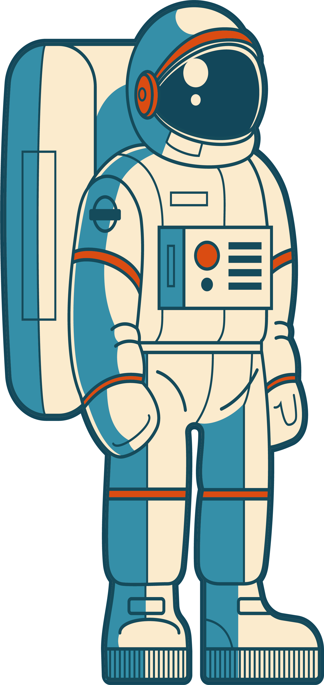

Hi I am suraj solanki Web-Developer , Computer-Engineer
Web Design My occupation of choice is web designer, and I chose this because even though I don’t know everything about computers I am very fast at learning about them. It’s never too late to start this occupation and I know if I put time and effort into this I know I will love it and I can be good at it. As a web designer I will create and keep up with websites, including the layout, and function according to the client. (Web Developer) Web designing has really developed over time ever since the “World Wide Web” was created and it has visually improved as well as the speed and mobility.
Hi , I am Suraj my journey in coding has started in the year 2020 and now I am completing my Computer Engineering from K.J.SOMAIYA. I love to code and also to share information regarding programming.